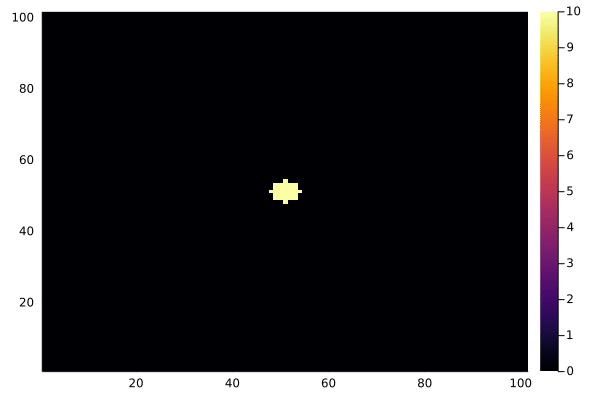

PDE simulation, machine learning
DIR=joinpath(pwd(),"../../src") # change this to your EquivariantOperators.jl directory
"""
simulation & machine learning of diffusion advection PDE
"""
using Plots
using Random
using Flux
using LinearAlgebra
Random.seed!(1)
include("$DIR/operators.jl")
# make grid
n = 2
dx = 0.02
cell = dx * Matrix(I, n, n)
rmax = 1.0
grid = Grid(cell, rmax)
sz = size(grid)
▽ = Op(:▽, cell)
# put small blob as IC
u0 = zeros(sz..., 1)
put!(u0, grid, [0.0, 0.0], [1.0])
g = Op(:Gaussian, cell; σ = dx)
u0 = g(u0)
# diffusion advection
p1 = [0.1]
p2 = [0.5, 0.4]
vf = cat(p2[1] * ones(sz), p2[2] * ones(sz), dims = 3)
f(u, p, t) = p1[1] * (▽ ⋅ ▽(u)) - vf ⊗ ▽(u)
# simulate PDE
using DifferentialEquations
tspan = (0.0, 1.0)
prob = ODEProblem(f, u0, tspan)
sol = solve(prob, Tsit5(), reltol = 1e-3, abstol = 1e-3)
# plot
using Plots
gr()
anim = Animation()
t = 0:0.02:1
for t in t
heatmap(sol(t)[:, :, 1], clim=(0,10))
frame(anim)
end
gif(anim, "f.gif", fps = 10)
##
data = [(sol(t), f(sol(t), 0, 0)) for t in t]
# op = Op(Radfunc(),-1e-6, 2dx, cell)
# ps=Flux.params(op)
p1_ = ones(1)
p2_ = ones(2)
ps = Flux.params(p1_, p2_)
function loss(u, du)
vf_ = cat(p2_[1] * ones(sz), p2_[2] * ones(sz), dims = 3)
duhat = p1_[1] .* (▽ ⋅ ▽(u)) - vf_ ⊗ ▽(u)
@show l = nae(duhat, du)
end
loss(data[1]...)
opt = ADAM(0.1)
Flux.@epochs 20 Flux.train!(loss, ps, data, opt)
@show p1_, p2_
# heatmap(op.kernel[:, :, 1])([0.09722040424592751], [0.5040614638557822, 0.41814952404318356])